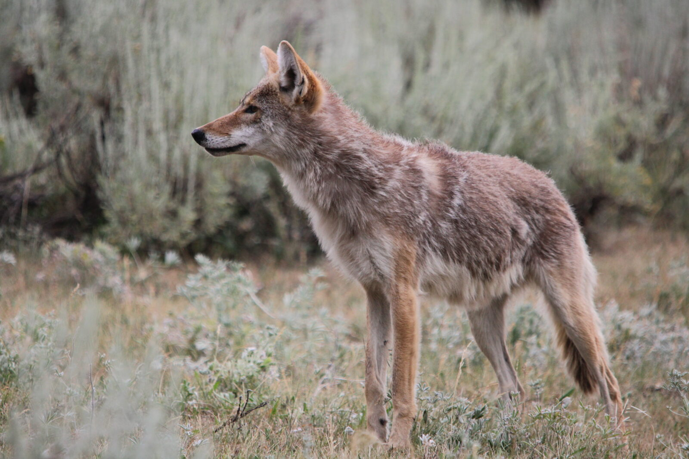
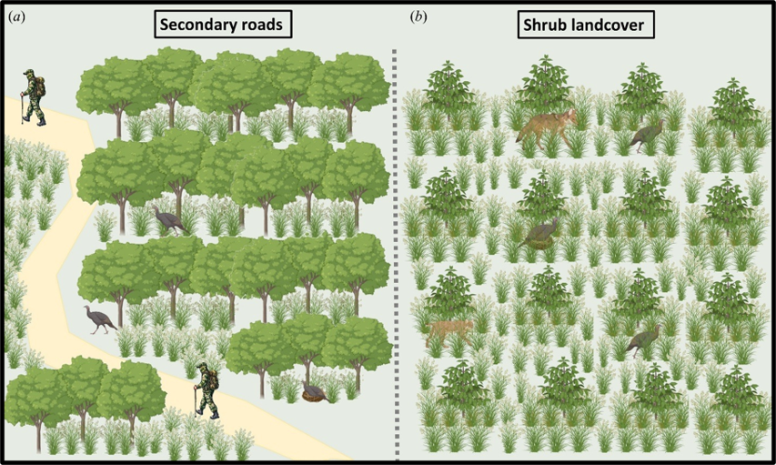
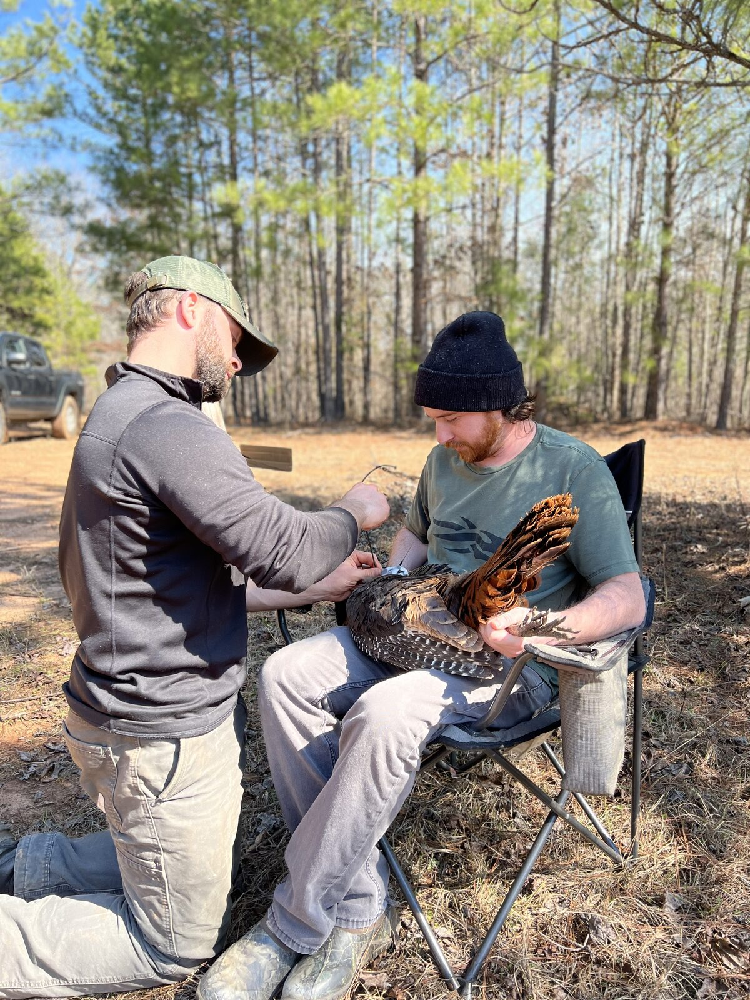
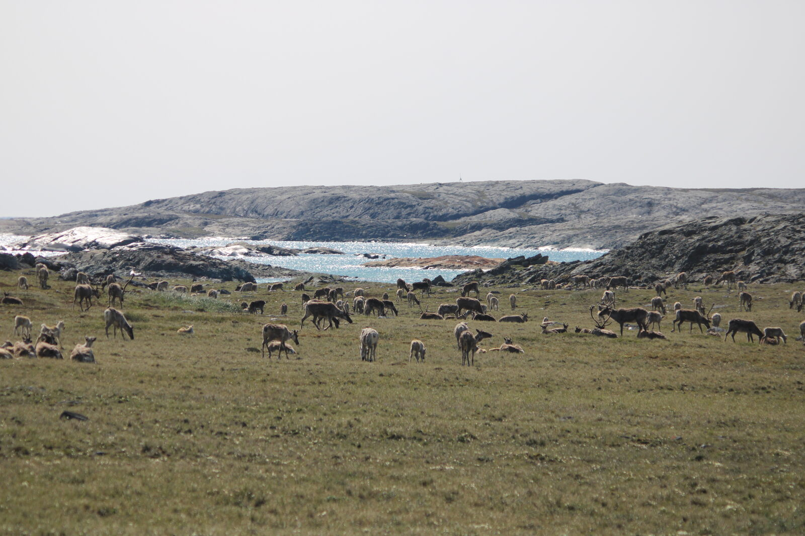
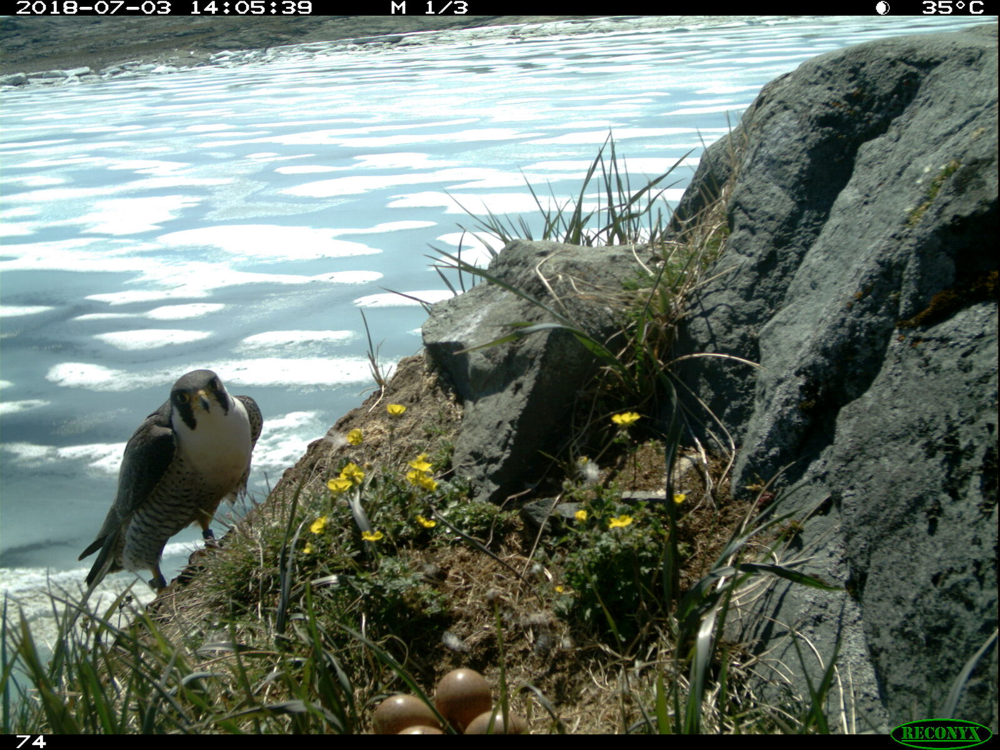
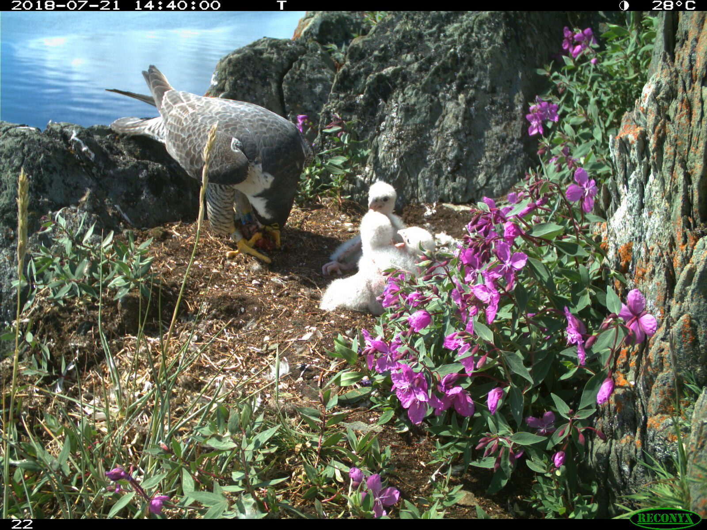

Behavioral variation, and what it costs.
My research is broadly framed around understanding phenotypic variation in behavior: how individuals differ in their mean behavioral expression (behavioral type), how variable they are around that mean (behavioral predictability), and how they adjust behavior across environmental contexts (plasticity). A central theme is whether individuals differ in their capacity to adjust to environmental change — including human-driven change like road density, development, and hunting pressure — and whether that variation places some individuals in greater conflict with human activity than others.
Harvest-induced selection
Harvest-induced selection is a fancy way of saying that harvest targets certain traits expressed by individuals. Harvest can target morphological traits like horn size or body size, but it can also target behavioral traits. Emerging work is showing that harvest targets behavioral traits that increase detectability, such as using open areas, traveling faster or moving more, and using areas on the landscape that hunters also use.


Publications
To Stay or to Roam? Behavioral Type Influences Trade-offs in Male Wild Turkey Behavior
doi.org/10.1111/1365-2435.70283Harvest and natural predation shape selection for behavioral predictability in male wild turkeys
doi.org/10.1111/1365-2656.70157The role of human hunters and natural predators in shaping the selection of behavioral types in male wild turkeys
doi.org/10.1098/rsos.240788Social status mediates harvest-induced selection on behavioral type and predictability in Coyotes
In review — June 2026Human shield hypothesis
Humans can impose selective pressures on prey and predator species alike, causing changes in vigilance, resource use, and movement behavior. Some species avoid humans altogether, while others seek out human-modified areas for the resources or safety they offer. Research suggests that larger predators tend to avoid human activity, and that features like roads and trails can act as a barrier to predators and increase fitness for prey species occuring closer to human activity. This protective effect is called the human shield hypothesis (Berger 2007).


Publications
Testing the human shield hypothesis: Female wild turkeys have greater fitness near human activity
doi.org/10.1111/1365-2664.70235Site familiarity
Animals develop familiarity with specific areas through repeated use, gaining detailed knowledge of local conditions such as food availability, predator presence, and landscape features — knowledge that can directly affect fitness. Familiarity is often hypothesized to increase survival, though most studies haven't considered that individuals vary in their degree of site familiarity. Likewise, few studies have explored whether staying closer to familiar areas imposes a trade-off between multiple sources of mortality, such as human harvest and predation.


Publications
To Stay or to Roam? Behavioral Type Influences Trade-offs in Male Wild Turkey Behavior
doi.org/10.1111/1365-2435.70283Fitness Consequences of Behavioral Types and Behavioral Predictability Associated with the Use of Hub Resource Patches in Male Wild Turkeys
Major revision — August 2026Resident vs. migrant falcon phenology & climate change
The Arctic is warming and spring conditions are advancing — resulting in earlier snowmelt, earlier plant growth, and earlier emergence or arrival of key resources. Most phenology work has focused on songbirds, waterfowl, and shorebirds, with a noticeable lack of phenology studies on top avian predators. Little is known about whether migratory and resident top avian predators differ in their response to climate change. Emerging work in non-predatory bird species suggests migratory strategy can predict climate response, with resident species often responding more strongly than migratory ones.



